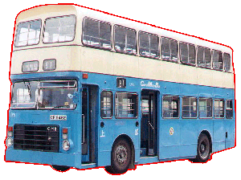
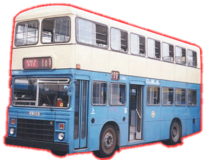

 |
 |
* LV 5 * |
* LV164 * |
| 型號 Model 引擎 Engine 容積 Engine Capacity 波箱 Gearbox 車身 Body Build
體積 Volume
載客量 Passenger
登記年份 Year |
: LV (1 - 167) : Gardner 6LXB (180 bhp) : 10.45 Litres : Voith DIWA 851 (3-Speed Automatic) : Walter Alexander (Type CB) (LV 1 - 147) Duple Metsec (LV 148 - 167) : 9728L X 2500W X 4470H(mm) [LV 1 - 147] 9640L X 2450W X 4500H(mm) [LV 148 - 167] : (LV 1 - 147) U60 L42 S6 (LV 148 - 167) U60 L38 S10 : 1979 - 2000 |
利蘭勝利二型 (Leyland Victory Mk II)，一個家喻戶曉的名字，因為前置引擎關係，巴士的底盤和地台都被提高了許多，車身都要相對加高，種種因素而有著特別高的重心，所以它的出現就為香港多添了十多宗翻車意外。此車於1979年到港在中巴車隊服役，正當中巴鬧車荒之際及後置引擎巴士未能適應攀爬大量斜坡時，中巴再次向 Leyland 購入前置引擎巴士以解其多個問題，車身分別由兩家英國車身大廠所供應，車子擁有大馬力引擎加上附有自動減速器的全自動變速箱，在上山落坡時都能發揮其超卓功能，使巴士安全地走過每一個險要的山頭，例如於 1:10 的柴灣道、1:8 的炮台山道或超斜香港仔水塘道 1:5 般的大斜坡，以至石澳道、南風道或大潭道般的多灣窄路，它都能活動自如地走過，相信除了太平山頂外，港島每個角落都有此車的足跡，甚至一直擔任當年連過三條主要隧道，往返沙田火車站至華富村大長途線 170 的主力車，足証此系車性能可靠，所以勝利二型確實在香港功不可沒。
直到1997年，中巴將所有服役中的勝利二型轉售給新世界第一巴士公司，繼續為港人服務至2000年8月，才結束了其二十一年的光輝歲月。